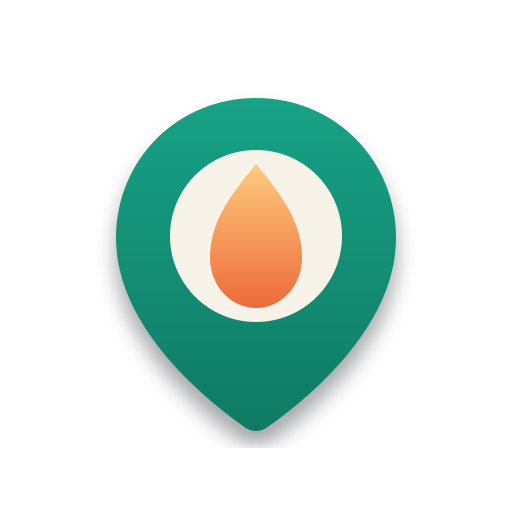

Understand the problem
Clarify needs, goals and constraints.
I design and build web and mobile products around real needs. I bring together full-stack development, software consulting and AI agents to turn ideas into useful, thoughtfully designed tools that are easy to use.
01 / HOW I WORK
Many of my ideas start with a need I encounter myself: one step too many, information that’s hard to find, or a task that could be automated. Those observations are where I start thinking about the product.
I work on projects from initial analysis through release and ongoing improvements. I set priorities based on goals, impact and available resources, coordinating the work so everyone understands what matters and what comes first.
I integrate AI agents into development to explore solutions, write code and automate repetitive tasks. I pay close attention to the process and testing, checking that the result meets the original needs.
Clarify needs, goals and constraints.
Assess impact and effort, coordinating people, tools and AI agents.
Develop, test and improve the product.

A web and mobile app that compares fuel prices in Italy using public data from Italy’s Ministry of Enterprises and Made in Italy (MIMIT). It helps drivers find lower-priced stations nearby and plan refuelling stops along their route.
Visit GeoPienoAn app that turns spoken or typed thoughts into organised notes and checklists. AI transcribes voice input and adds new content to the appropriate note or list, so ideas can be captured without manually organising them.
Explore Keepify03 / EXPERIENCE
From in-house development
to consulting and my own projects.
Since 2023, I’ve combined software development and consulting for businesses with building my own products.
Logol AG
I worked on a business management platform for the legal sector, later becoming Research & Development Manager for the same product. Alongside hands-on development, I took on team leadership, strengthening my coordination and management skills.
FrameTECH S.r.l.
I developed contact centre management software and provided on-site consulting for traditional and web-based call centres. This experience taught me to translate clients’ operational needs into software solutions.
University of Parma
My university studies provided the theoretical and methodological foundations for my approach to programming, problem analysis and software development.


04 / CONTACT
Get in touch to discuss a project,
consulting support or an
idea.